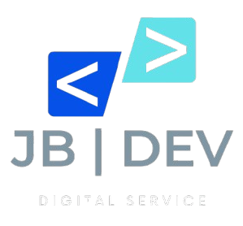
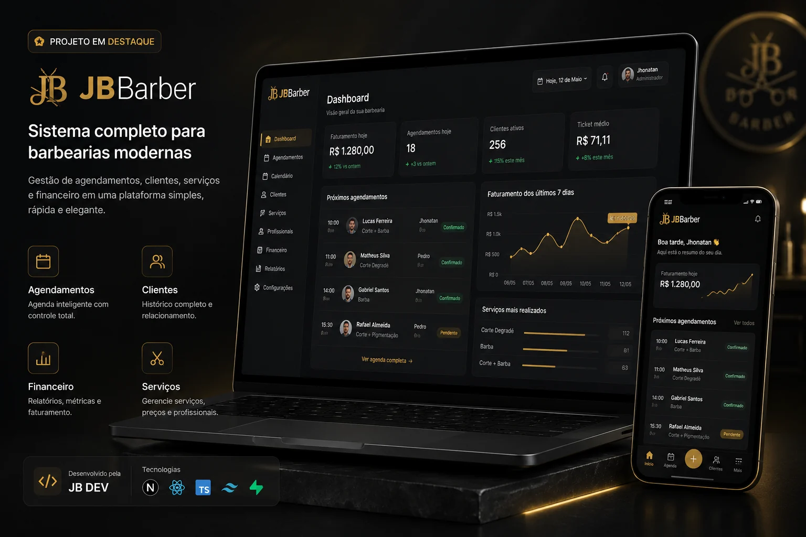

Jonathan Vinicius
Desenvolvedor Web & Fundador da JB DEV
Transformo ideias em sites e sistemas profissionais.
Serviços
Sites Profissionais
Sistemas Personalizados
Automações
Projetos em destaque

Sistema de Agendamento
Plataforma completa para agendamentos online com gestão de clientes, serviços e horários.
Conversar sobre este projetoFinance.AI
Gestão financeira inteligente com receitas, despesas, orçamentos, indicadores e análise de dados.
Conversar sobre este projeto
CRM SaaS & Automação de Vendas
Gestão de leads, pipeline comercial, integrações e automações em uma plataforma escalável.
Conversar sobre este projeto
Plataforma de Atendimento com IA
Atendimento inteligente, base de conhecimento, análise de conversas e integração multicanal.
Conversar sobre este projetoTecnologias
- JSJavaScript
- TSTypeScript
- ⚛React
- NNext.js
- JSNode.js
- NNestJS
- ≋Tailwind CSS
- SCStyled Components
- PPostgreSQL
- myMySQL
- MMongoDB
- ▲Prisma
- SSupabase
- RRedis
- ▰Docker
- GGit
- GHGitHub
- ▲Vercel
- RRailway
- ◎OpenAI
- n8nn8n
- REST APIs